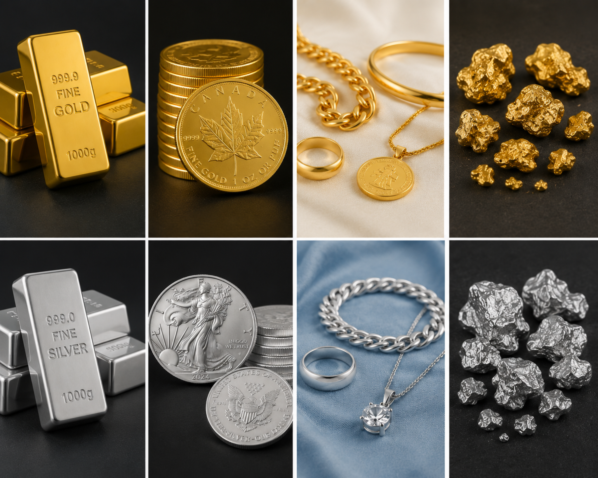

The Nayak Narrative
Storytelling through Research & Analytics
Storytelling through Research & Analytics

Aditya Nayak in Pune, MH, India
MAY 7 2026
For thousands of years, two lustrous metals have driven human ambition, shaped empires, and transformed economic systems. Gold and silver aren't just valuable commodities—they're the thread connecting ancient civilizations to modern financial markets. This is the story of how these precious metals rose to prominence, why their role has fundamentally changed, and what really moves their prices in today's complex global economy.
What makes them precious?
Before we understand their economic journey, we need to know what makes gold ( Au) and silver (Ag) special. Beyond their attractive luster, these metals possess unique physical properties: they're excellent conductors of heat and electricity, remarkably malleable, and highly durable. Gold's resistance to tarnish and corrosion gave it a crucial advantage over silver, making it one of the first metals to attract sustained human attention.
But science alone doesn't explain their allure. Across cultures and continents, gold became intertwined with the divine. Ancient Egyptians called it the "flesh of the gods," linking it to the sun god Ra. Hindus associated it with goddess Lakshmi's divine energy. Chinese tradition made it central to Lunar New Year prosperity rituals, while the Aztecs called it "god excrement"—highlighting its sacred yet earthly origins. This cultural reverence, combined with scarcity and workability, positioned gold and silver as natural currencies for trade and stores of value.
The Rise of Gold Through Civilizations
Ancient Foundations
The economic story of gold begins with ancient Greece, where the production of gold and silver coins revolutionized trade and accelerated cultural and scientific progress. Rome later amassed vast reserves through conquest, but its heavy reliance on gold eventually contributed to cycles of abundance followed by decline. After Rome's fall, Constantinople and Baghdad became major trade centers where gold circulated widely across the Mediterranean and beyond.
Medieval Dominance & the Age of Discovery
By the Middle Ages, Venice had risen as Europe's financial hub, pioneering modern banking practices and creating the gold ducat-which became a truly global currency. Then came the discovery of the New World, which fundamentally shifted the balance of power. Wealth flooded into Spain, sparking inflation and fierce competition among European nations. Economic leadership gradually passed from Antwerp to Genoa, Amsterdam, and finally to London, where the gold standard cemented Britain's 19th-century dominance.
Gold's allure drove humanity to extraordinary—and often terrible—extremes. The legend of El Dorado perfectly illustrates this. It began with the Muisca people's sacred rituals in 16th-century Colombia, where chiefs coated themselves in gold dust and dove into Lake Guatavita to offer treasures to water gods. Spanish conquistadors, hearing exaggerated tales, transformed this ceremony into myths of an entire city overflowing with gold.
From the 1530s onward, explorers like Gonzalo Jiménez de Quesada ravaged the Andes seeking it. They even drained Lake Guatavita in 1545, finding only a few artifacts. Sir Walter Raleigh's 1595 quest fueled further violence and death across South America. El Dorado proved illusory, yet it epitomized gold's economic pull—sparking colonial exploitation, indigenous suffering, and empire-reshaping gold rushes while highlighting the folly of unchecked greed.
Silver's Parallel Journey
Silver followed a remarkably similar path, though it remained more abundant. Mining began around 3000 BCE in Anatolia (modern-day Turkey), helping early civilizations in the Near East and Ancient Greece flourish.
In the 6th century BCE, Athens minted the first tetradrachm—a large silver coin that paid a skilled laborer's weekly wage. It became the first mass-circulated coin, spreading far beyond Greece to become the ancient world's standard currency. Featuring Athena on one side and an owl on the other, it established the "heads or tails" design prototype still used today.

Fig 1. Image of a silver coin minted in Ancient Greece periods
Production centers shifted over time from Greece's Laurium mines to Spain, which became a major supplier to the Roman Empire. Phoenicians and Romans heavily exploited Spanish mines, producing up to 200 tonnes annually by the 2nd century CE for coins and Asian spice trade. But the real transformation came with Columbus's 1492 landing in the New World. Between 1500 and 1800, Bolivia, Peru, and Mexico accounted for over 85 percent of world silver production. The first silver shipments from Mexico reached Europe in 1522. Peru's rich Cerro de Potosí mines produced vast quantities. Later, California, Australia, the United States, and Ontario, Canada became major silver sources. Being more readily available than gold yet possessing similar properties, silver earned its status as a precious metal through rarity, durability, and versatility—making it a trusted medium for trade, adornment, and value storage.
The Evolution of Monetary Systems
From fixed prices to the Gold Standard
For centuries, governments and rulers controlled gold and silver prices directly. British rulers initially fixed gold's price to the pound, adjusting it roughly once per century. But as nations began printing their own currency notes, a fundamental problem emerged: fiat money relied solely on user confidence and wasn't always correlated with actual gold reserves. Currency debasement became common during inflation when additional gold couldn't be mined.
The solution was the gold standard - a system where countries could only print currency backed by their gold reserves. This created price stability and facilitated trade, though it also caused deflation during shortages. Silver, meanwhile, suffered a dramatic blow: after the Coinage Act of 1873 (dubbed the "Crime of 1873" by producers), silver lost monetary status. Prices plummeted as unlimited minting ended, and the gold-silver ratio hit 18:1 by 1880.
The Great Depression's Lessons
The gold standard's rigidity became painfully clear during the Great Depression. When the United States temporarily suspended it in 1933, the economic effects were striking. Countries that abandoned gold gained "more latitude to expand their money supplies and thus to escape deflation". Those leaving gold in 1933-1935 showed average money supply growth of 3-6% annually. Among the 14 countries abandoning gold in 1931, wholesale prices stabilized and showed average inflation of 2-4% annually from 1934-1936. In stark contrast, Gold Bloc countries like France, the Netherlands, and Poland continued deflating through 1935, with persistent price declines well after the initial 1930-31 shock.
Bretton Woods and Nixon's Shock
The 20th century exposed further limits of gold-backed systems. Wars drained reserves, Nazi Germany seized gold to fund expansion, and the United States emerged as the new global power. The Bretton Woods system tied currencies to the dollar, which was itself pegged to gold at $35 per ounce. But mounting financial pressures proved unsustainable. In August 1971, President Richard Nixon announced the U.S. would eliminate dollar-to-gold conversion, formally ending the gold standard. The global financial system entered the era of pure fiat money.
The market response was dramatic. Gold jumped from $35/oz to $120/oz by year-end 1971, then exploded to an $850/oz peak in January 1980 amid stagflation, the oil crisis, and loose monetary policy. Silver followed sharply, rising from roughly $1.60/oz pre-1971 to a $50/oz peak in 1980 during the Hunt brothers' attempted market corner. The fiat shift enabled unlimited money printing, fueling chronic inflation—the US CPI has risen over 500% since 1971. Gold averaged roughly 7% annual returns, eventually hitting over $2,000/oz by the 2020s. Silver, being more industrial, saw greater volatility—falling to $4/oz in 2001, rallying to $50 in 2011 on green tech demand—but ultimately lagged gold long-term due to more abundant supply.
So What Drives Prices Today?
Since Nixon's 1971 decision, precious metal prices became truly market-driven, responding to macro-financial conditions, investor behavior, and industrial demand rather than government pegs. Anything that shifts supply, demand, or the value of money itself now moves these markets.
The Seven forces Behind Gold Prices
Silver's Distinct Drivers
Silver shares many of gold's characteristics but with crucial differences:
While these factors usually fluctuate the prices of gold and silver, however, it does always show a correlation. A recent outlier that has been noticed is the current geopolitical tensions between Israel & United States with Iran.
The Central Bank Paradox: Why Gold Didn't Rally During the Iran Conflict
A fascinating recent development challenges conventional wisdom. When war broke out between Israel, the United States, and Iran in March 2026, gold prices were expected to surge—but they didn't. The explanation reveals gold's true modern driver: central bank buying. Back in 2022, when Russia invaded Ukraine, Western nations froze the Central Russian Bank's reserves. This sent a clear message globally: dollar assets held in Western systems carry political risks. Since gold cannot be frozen by hostile governments or switched off by banking consortiums, central banks responded with a wave of sovereign buying that pushed prices to historic highs.
However, the Iran conflict hasn't replicated this pattern. It hasn't triggered a global scramble to move reserves out of dollar assets. Rather, central banks have paused accumulation, and when this major engine driving gold halts, prices reflect that reality regardless of geopolitical events.
Investment or Insurance? Rethinking Precious Metals
So should you invest in precious metals? Dhirendra Kumar, CEO of Value Research, offers thought-provoking advice: precious metals should be considered insurance policies rather than investments. His reasoning is straightforward—metals don't produce anything, earn nothing, and merely remain idle. They can protect against extreme scenarios like currency collapse or hyperinflation, but they won't generate returns in normal times. Kumar suggests that a small allocation (5-10%) in a diversified portfolio can provide valuable protection without sacrificing growth potential.
Modern Alternatives
Today's investors have options beyond traditional precious metals:
In practice, investors seeking "gold-like" protection typically diversify across several assets: a core in precious metals, some real estate, high-quality bonds or cash, and possibly a small allocation to crypto or collectibles. This way, no single asset has to play the entire safe-haven role.
Conclusion: From Divine Metal to Market Instrument
The journey of gold and silver mirrors humanity's own economic evolution. From ancient religious offerings and medieval currency systems to modern portfolio diversifiers, these metals have adapted to serve each era's needs.
The gold standard gave way to fiat currency. Fixed prices became free markets. Geopolitical tensions now matter less than central bank policies. Yet through all these transformations, gold and silver retain their fundamental appeal: tangible, scarce, and beyond any single government's control.
Understanding this history doesn't just satisfy intellectual curiosity - it illuminates how these markets actually function today and where they might be headed tomorrow. Whether you see them as investments, insurance, or simply fascinating economic artifacts, gold and silver remain uniquely positioned at the intersection of human psychology, technological progress, and global finance.
To learn more in detail about the resources utilized for this post, please refer to the written document by clicking here.
Disclaimer: The following post is for educational purposes only and does not constitute as financial advice. Please consult a investment advisor for any financial-related queries or concerns.